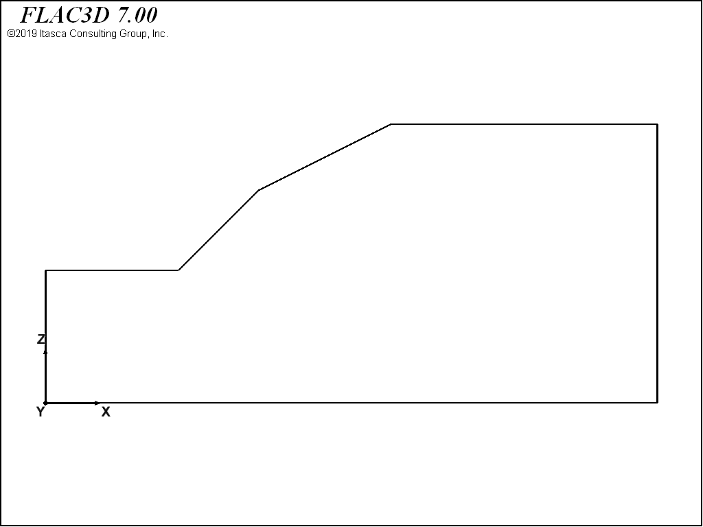
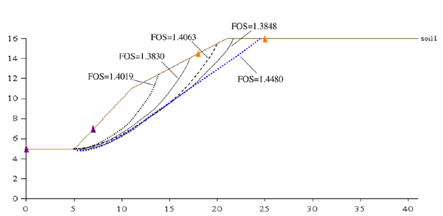
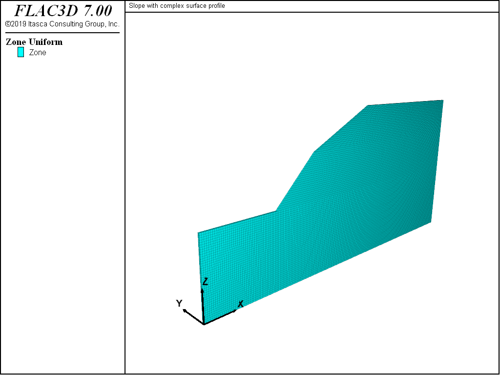
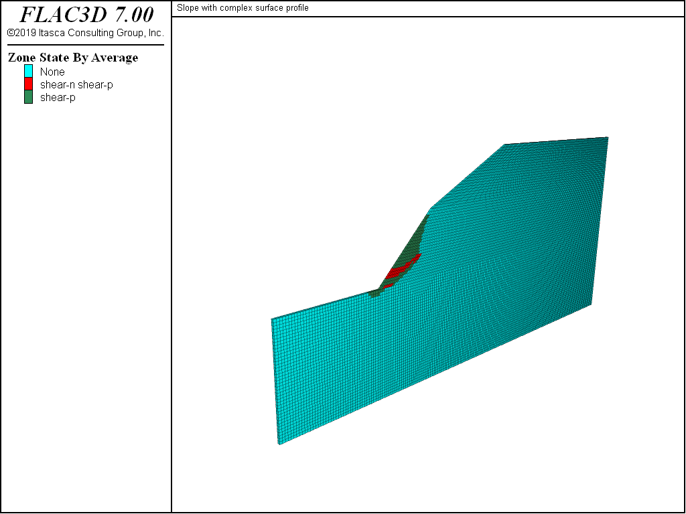
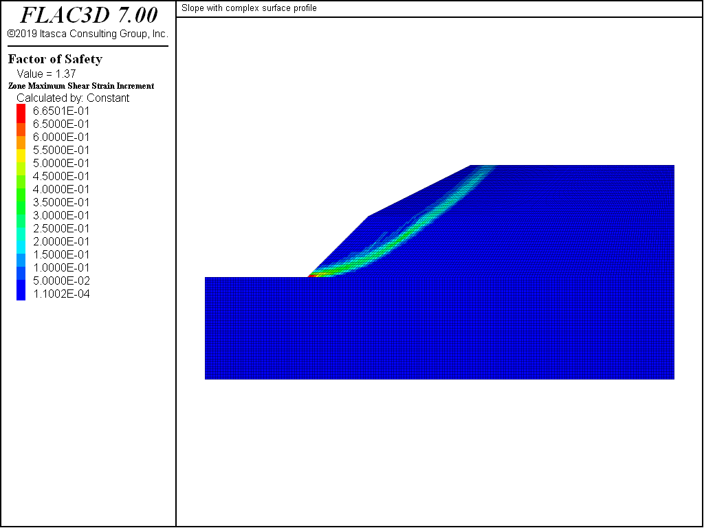

Mohr-Coulomb 材料中具有复杂表面形态的边坡的破坏
问题描述
注意
本示例的项目文件可在 FLAC3D 中查看/运行。[1] 该项目的主数据文件见本示例末尾（main data file）。
本示例说明 FLAC3D 识别具有复杂表面形态（即由多个倾角定义的坡面）的边坡临界破坏状态的能力。本练习中的边坡由两个倾角组成：下部倾角 45°，上部倾角 26.7°。边坡几何见图 1（Figure 1）。问题条件取自 Cheng 等（2007）。Cheng 等采用 Morgenstern-Price 极限平衡法确定了该边坡的五个局部极小破坏面，如图 2（Figure 2） 所示。他们从一系列极限平衡模拟中识别出两个可能的临界破坏面：一个的安全系数为 1.383，另一个为 1.3848。


图 1：具有复杂表面形态的边坡。


图 2：由极限平衡法计算的局部极小破坏面与安全系数（取自 Cheng 等 2007）。
本问题中边坡材料的性质包括：
| 弹性模量，\(E\) | = | 14.0 MPa |
| 泊松比 \(ν\) | = | 0.3 |
| 重度，\(γ\) | = | 20.0 Kn/m3 |
| 黏聚力，\(c\) | = | 10 kPa |
| 摩擦角，\(ϕ\) | = | 30° |
| 剪胀角，\(ψ\) | = | 0.0 |
| 抗拉强度，\(σ_t\) | = | \(c\) /tan \(ϕ\) |
FLAC3D 模型
FLAC3D 模型根据 Cheng 等（2007）给出的问题尺寸构建。边坡几何位于 \(x\)-\(z\) 平面内，在 \(y\) 方向厚度为一个网格单元。模型几何见图 3（Figure 3）。为确定能提供最精确解的网格尺寸，采用逐渐加密的网格划分进行了多次模拟。随着网格尺寸减小，计算得到的安全系数降低，并在水平方向为 144 个网格单元的网格处趋于稳定。
施加重力，并将模型求解至平衡状态，以建立模型的初始应力。请注意，此时一些孤立网格单元已进入剪切破坏状态，如图 4（Figure 4） 所示的塑性状态图所示。边坡是稳定的。


图 3：边坡模型几何。


图 4：初始力平衡时边坡的塑性状态。
通过选择接近实际安全系数的下界和上界包围值，可以缩短安全系数计算时间。根据图 2（Figure 2） 中所示的系数范围，将下界包围系数设为 1.30、上界设为 1.45。包围系数通过 bracket 设置，它是 设置安全系数分析参数（model factor-of-safety） 命令的可选关键字。
计算得到的安全系数为 1.38，破坏面按图 5（Figure 5） 所示的剪应变云图发展。该破坏面与图 2（Figure 2） 中 FOS = 1.3848 破坏面所对应的局部极小破坏面高度吻合。FLAC3D 计算得到的破坏状态是全局最小稳定状态。


图 5：安全系数结果。
参考文献
Cheng, Y.M.、T. Lansivaara 与 W.B. Wei。“用极限平衡法和强度折减法进行二维边坡稳定分析”，Computers and Geotechnics，34，137-150，2007。
数据文件
ComplexSlope.dat
;-------------------------------------------------------------
; 摩尔–库仑材料中的复杂地表轮廓
;-------------------------------------------------------------
model new
model large-strain off
fish automatic-create off
model title 'Slope with complex surface profile'
; 创建模型
zone create brick point 0 0,0,0 point 1 10,0,0 point 2 0,0.25,0 ...
point 3 0,0,10 size 40,1,40
zone create brick point 0 10,0,0 point 1 46,0,0 point 2 10,0.25,0 ...
point 3 10,0,10 size 144,1,40
zone create brick point 0 10,0,10 point 1 46,0,10 point 2 10,0.25,10 ...
point 3 16,0,16 point 4 46,0.25,10 ...
point 5 16,0.25,16 point 6 46,0,16 ...
point 7 46,0.25,16 size 144,1,24
zone create brick point 0 16,0,16 point 1 46,0,16 point 2 16,0.25,16 ...
point 3 26,0,21 point 4 46,0.25,16 ...
point 5 26,0.25,21 point 6 46,0,21 ...
point 7 46,0.25,21 size 144,1,20
zone face skin ; 标记模型边界
; 初始化重力
model gravity 10
; 分配摩尔–库仑模型和属性
zone cmodel assign mohr-coulomb
zone property density 2000.0 young 1.4e7 poisson 0.3 ...
fric 30 cohesion 10000.0 ten 1e10
; 边界条件
zone face apply velocity-normal 0 range group 'East' or 'West1'
zone face apply velocity-normal 0 range group 'North' or 'South'
zone face apply velocity (0,0,0) range group 'Bottom'
model save 'initial'
; 求解至初始平衡
model solve elastic ratio-local 5e-3
model save 'slope-1'
model factor-of-safety bracket 1.30 1.45 ratio-local 5e-3 filename 'FOS-slope'
尾注
| [1] | 要在 FLAC3D 中查看该项目，请使用程序菜单。
⮡ FLAC |
| 这些内容对您有帮助吗？… | FLAC3D © 2019, Itasca | 原文更新于 2020 年 10 月 8 日 |